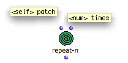
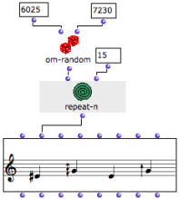
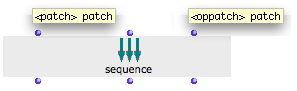
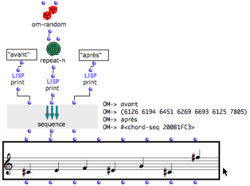

OpenMusic DocumentationHiérarchie de section : OM 6.6 User Manual > Visual Programming II > Control Structures > Sequential Operators
OpenMusic DocumentationHiérarchie de section : OM 6.6 User Manual > Visual Programming II > Control Structures > Sequential Operators
Navigation : page précédente | page suivante
Attention, votre navigateur ne supporte pas le javascript ou celui-ci à été désactivé. Certaines fonctionnalités de ce guide sont restreintes.
Sequential Operators
Sequential operators control the occurrences of operations in program. They can apply to the iteration of an operation, or to the succession of several operations at a single evaluation.

Sequential operators can be accessed via the OM Kernel / Control menu.
Repeat-n : Iteration
Repeat-n evaluates something a number of times and collects the results in a list, so that the manual evaluation doesn't have to be repeated.
Features

|
Repeat-n has two default inputs :
The data assigned to "self" is repeated n times. The result is returned as a list by the output. |
Example
Here, repeat-n is applied to om-random to produce a random notes sequence.
Repeat-n evaluates om-random 15 times : each time, a random value is returned. The resulting list is returned to the pitches input of the factory box. |

|
Advanced Use of Iteration : OMLoop
More complex or specific iterative processes can be designed and controlled via the OMLoop module editor.
The Omloop Module
Sequence : Executing Several Tasks
Features

|
The sequence box executes a sequence of distinct operations.
|
Example
A chord-seq is generated while other tasks are executed.

When the chord-seq is evaluated, sequence performs three tasks :
print "avant",
generate and print a random list of numbers,
print "après".
Then, the value of its second output is returned to the "pitch" input of the chord-seq.
Note that without print, the Listener wouldn't display the values the outputs of sequence. These values can be returned with an individual evaluation of each output.
Références :
Plan :
Navigation : page précédente | page suivante
A propos...(c) Ircam - Centre Pompidou